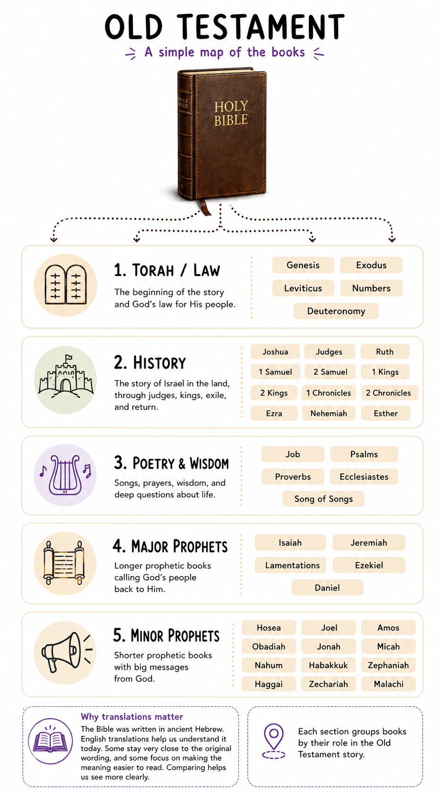
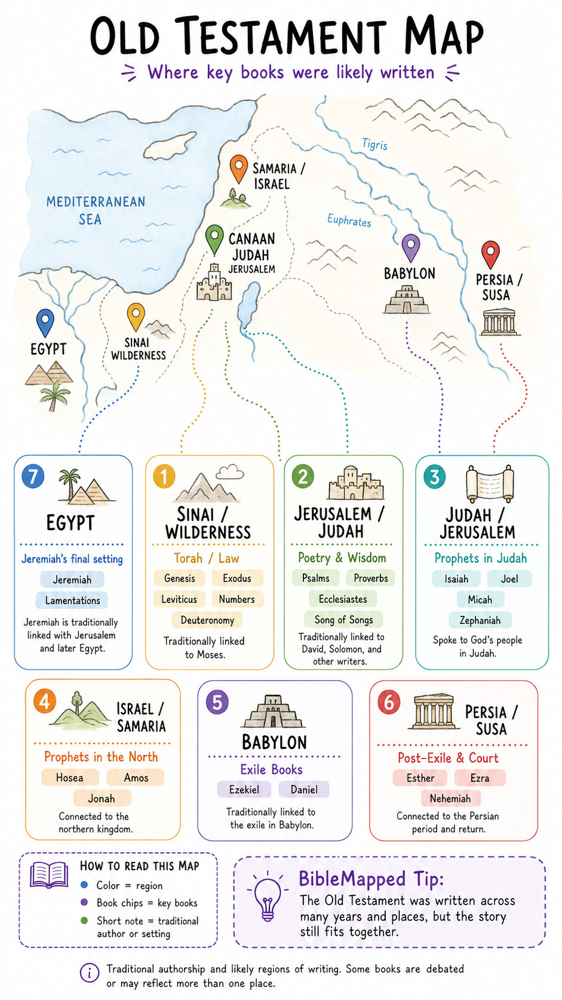
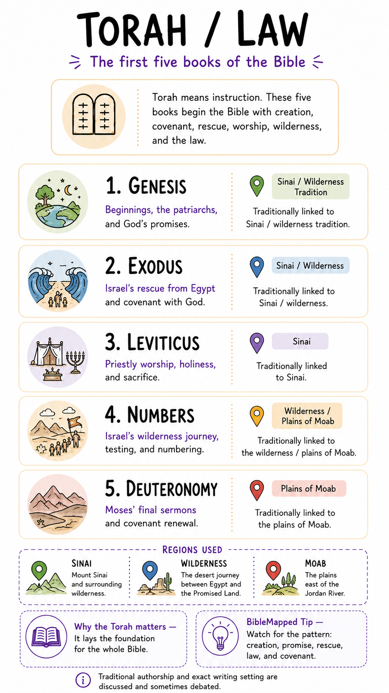
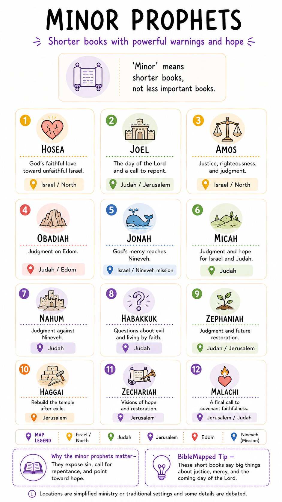

1. Old Testament Overview
A simple map of the books
A visual guide to the books, sections, and map context of the Old Testament.



Upload this image later as ot-04-history.png inside /assets/old-testament/.
Upload this image later as ot-06-major-prophets.png inside /assets/old-testament/.
